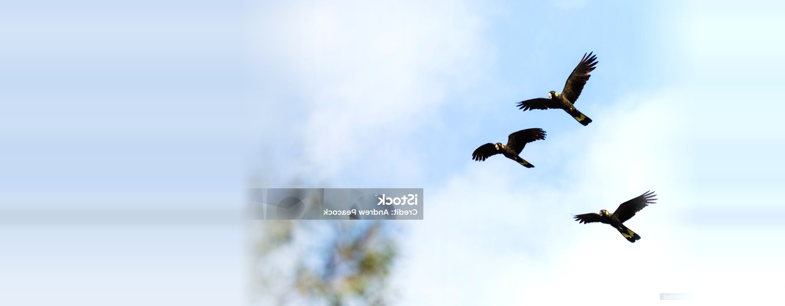
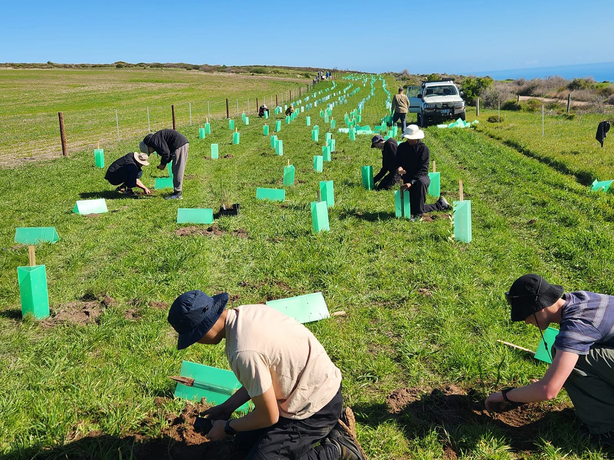
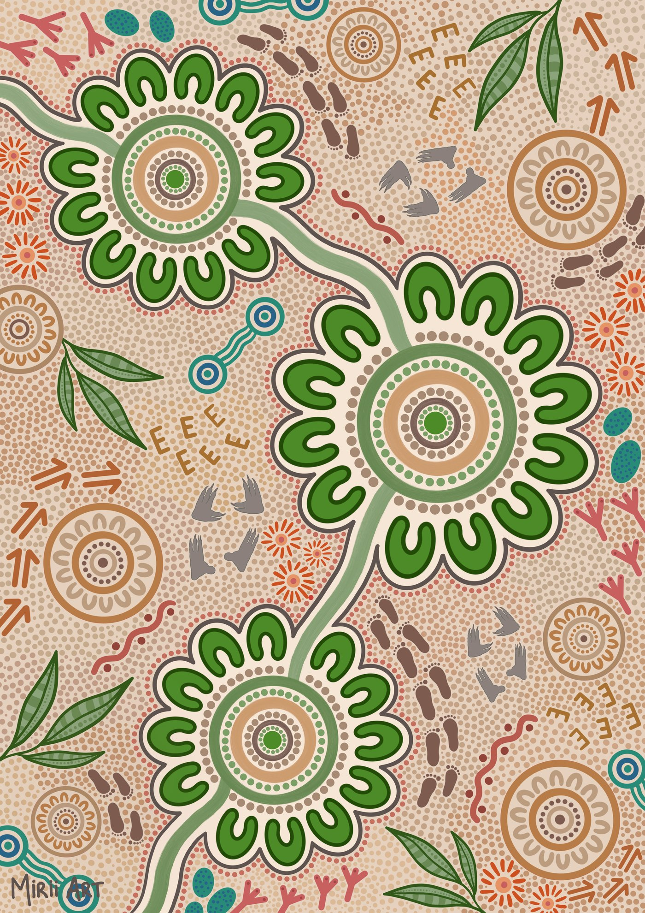
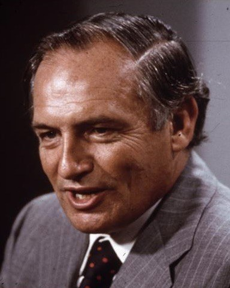

We protect and restore Australia, with the people who know it best.
Since 1970 we have been leading conservation across the country alongside First Nations partners, scientists, community groups, governments and corporates.
Three ways we work.
More than 2,000 native species are now at risk of extinction. We focus where the need is greatest, across three connected areas of work, all of it aligned with Australia’s commitment to protect 30% of its land and sea by 2030.
Growing National Parks
We expand and protect conservation spaces to safeguard critical habitats and support resilient ecosystems. Working with First Nations groups, scientists and local stakeholders, we identify, acquire and protect high-value ecosystems so they are preserved for generations to come.
See the projectsSaving Species
We protect Australia’s most vulnerable species by restoring habitats, creating wildlife corridors and supporting targeted recovery programs. By addressing threats like habitat destruction, invasive species and climate change, we help prevent extinctions and strengthen ecosystems.
See the projectsHealing the Land
We restore landscapes affected by bushfires, floods and land clearing through our Landscape Resilience Program. With 30 native plant nurseries, we grow and plant climate-adaptive and fire-resistant species, working towards nine million trees by 2030.
See the projectsOrganising the work, and seeing it through.
Protecting a landscape almost never comes down to one organisation. It takes the community group who knows the ground, the scientists who can measure what is changing, the landholders and agencies who manage access, and the people willing to pay for the work. Rarely does any one of them hold all the pieces.
That is the work we do. We find the places and species that need help most, bring the right people around them, and organise the project so it can actually be delivered. We help fund it, and we report on what changed.
It is why a community nursery, a state government and a corporate partner can end up working on the same patch of country, each doing the part only they can do. Our job is to make that possible, and to stay with it long after the first season.

We acknowledge the Traditional Custodians of Country throughout Australia.
We pay our respects to Elders past and present, and honour the knowledge and traditions passed down through generations. Our work is grounded in the understanding that the lands and waters we protect have been cared for by First Nations peoples for tens of thousands of years.
Our commitment to reconciliation.
FNPW acknowledges that Aboriginal and Torres Strait Islander peoples are the Traditional Custodians of lands, seas, waters, flora and fauna, possessing crucial knowledge that supports our shared efforts to achieve a sustainable and healthy country. Our vision is to create such country, led and driven by First Nations peoples, through fostering deep engagement with one of the oldest living cultures on earth; a culture that remains a shining example of community and environmental sustainability.
Our Innovate RAP mirrors our ongoing commitment to strengthen relationships between Aboriginal and Torres Strait Islander peoples and non-Indigenous Australians, and to ensure our policies, processes and programs are culturally appropriate and accountable. We are determined to advance reconciliation through meaningful partnerships and continual learning, building a unified Australia where First Peoples’ histories, cultures and expertise are celebrated to drive self-determination and a sustainable future for all.
Download our RAP
Artwork by Mirii Art.
55 years of impact.
drag back through the decades →FNPW celebrates 55 years of conservation and partners to help secure 1,900 hectares at Mundoo Island Station, SA, for permanent protection.
One million trees planted in key priority areas across Australia, delivered with 30 community nurseries.
The Curb Wombat Mange Program launches, providing treatment and resources to community groups and volunteers nationwide.
The Gondwana Project begins at Luke’s Farm; 1 Million Turtles, Fire Wise and the Bandicoot Super Highway all launch.
Named Australian Charity of the Year. The Mountain Pygmy Possum Breeding Centre and the $8m Remarkable Southern Flinders Project begin.
Healing our Land launches after the Black Summer fires: one million trees pledged in five years. The Governor-General marks our 50th anniversary.
Wildlife Heroes begins, backing 10,000+ rescue volunteers. 60,000 hectares of Nilpena Station acquired with the SA Government and partners.
229 hectares acquired to extend Woomargama National Park, home to some 25 endangered or vulnerable species.
FNPW funds the first and largest national river study of turtles to save the Murray River turtle.
Our first crowd-funding campaign protects Manly’s Little Penguins with cameras, lights and nesting boxes.
The Voluntary Heritage Estates Land project begins acquiring heritage sites for the public estate.
The Backyard Buddies microsite launches.
The Private Land Conservation Grant Program launches to grow conservation on private land.
Green Gully is acquired as a stronghold for the endangered Brush-tailed Rock-wallaby.
The Wollemi Pine Recovery Program launches to protect the species in the wild.
FNPW expands its focus from NSW to Australia-wide.
The Friends of National Parks community is established with the support of AGL.
Bushfires ravage NSW. FNPW raises over $1 million in funding to support the response.
The Gap Bluff Centre is established as the Foundation’s flagship for wildlife education.
Maroota Historic Site is reserved to protect Aboriginal art and engravings.
Operation “Cheese lift” flies protein supplements to Lord Howe Island’s woodhen, part of $250,000+ for the species.
Mallee Cliffs National Park secured: 58,000 hectares protecting Malleefowl habitat.
Our first donor appeal launches at Greycliffe House, Sydney Harbour National Park HQ.
FNPW is established by NSW Lands Minister the Hon. Tom Lewis AO. First acquisition announced weeks later: Mount King Station, NW NSW.
The people leading the work.



The late Hon. Tom Lewis AO
As NSW lands minister, Tom Lewis set up the National Parks and Wildlife Service in 1967, then established the Foundation for National Parks & Wildlife in 1970 as its fundraising arm. Today we are an independent conservation organisation working Australia-wide.
Our Board of Directors.
Our board brings together expertise across conservation science, law, finance and community leadership to guide FNPW's long-term mission.


Our latest stories.

Mundoo Island: a once-in-a-generation conservation victory
Read the story →
18,582 wombat mange treatments delivered
Read the story →
Listening to Country: First Nations fire management
Read the story →
Mountain Pygmy Possums: a year on
Read the story →
Restoring the Growling Grass Frog
Read the story →STRYDE4 Day: 19 May
Read the story →Help us protect what matters most.
Every donation, partnership and volunteer hour adds up to landscapes restored and species saved.